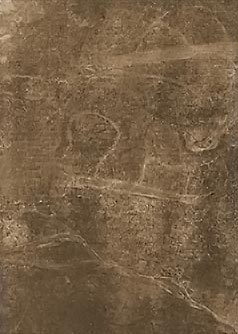

|
j
a v a s c r i p t |
December 13, 1944
At 2030 last night we heard a terrific explosion followed by two or more distant explosions. Bicycling downtown this morning I saw an oil fire around Mariveles Bay and evidence that smoke had accumulated and spread during the night throughout Manila Bay.

Burauen Airfields
Tribune: "San Pablo Airfield Retaken.... Japanese land airborne units, storm base." So now they hold the Burauen and San Pablo airfields, or do they? The News is that three American columns converging on Ormoc from the north, south and west are now only two or three miles from each other. As a Japanese captain in Mandaluyong admitted to a friend of mine, "Leyte is finished," meaning lost. Tokyo suffered the heaviest bombing yet — four times in one day or maybe by four waves. Spotting Maurice and I at the Escolta, Mike Campos shouted that he had just seen a large group of American prisoners walking towards the Port Area. "Your brother Joe was one of them"! He believes Joe even waved a weary shrug of recognition to him as if to say, "look at us now." Despite proceeding to the port at a furious pace, we only saw the last batch of prisoners disappear through the giant gate. Once again we had missed him. With Halsey's Task Force in the neighborhood we hope the ship won't dare to leave port, for even if it could elude Halsey's pilots it would still have to face the risk of being sunk by submarines, like the one last October where only a handful of the 2,000 POWs survived. We returned home depressed and bitter. One of the local boys, "called" to the mountains to be a guerrilla, returned just after a month — underweight, on foot and in poor health. His "work" was "terrible," beyond his strength and endurance. Rains, lack of shelter, much lifting, pushing and walking through mountain trails weakened him. The Filipino Colonel in charge took it out on him especially because he is a mestizo. An American officer dismissed him because he suffered from malaria and dysentery. |
|
|
|
|